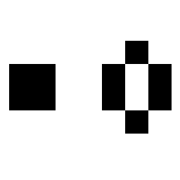
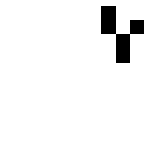
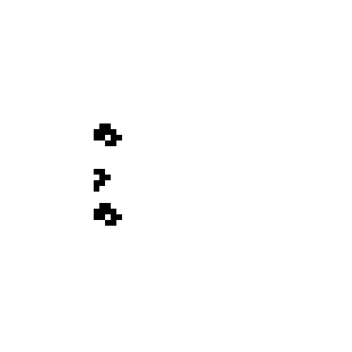
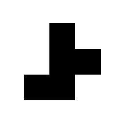
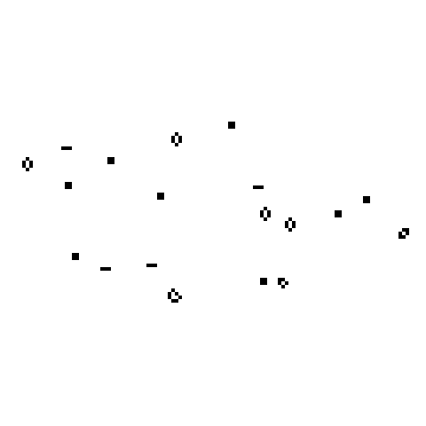
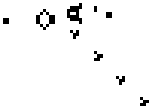
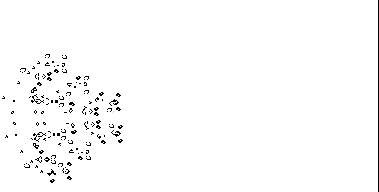

Le Jeu de la vie de Conway
Introduction
Le Jeu de la vie (Game of Life) est un automate cellulaire imaginé par John Horton Conway en 1970. Il est composé d'une grille sans fin en 2 dimensions dont chaque case représente une cellule qui peut avoir 2 états :
- vivante : représentée en noir dans cette page.
- morte : représentée en blanc dans cette page.
C'est un jeu en apparence extrêmement simple puisqu'il n'est basé que sur 2 règles qui s'appliquent à chaque génération,
une génération correspondant à une simulation de la grille complète :
- une cellule morte ayant exactement 3 voisines vivantes devient vivante également (elle nait)
- une cellule vivante ayant moins de 2 voisines vivantes ou plus de 3 meurt (de solitude ou de suffocation)
Note : chaque cellule possède huit voisines, qui sont les cellules adjacentes horizontalement, verticalement et diagonalement
Malgré ces règles très simples, le Jeu de la vie est Turing-complet.
Cela signifie qu'il est possible de programmer directement dans le Jeu de la vie !
Les structures
Une structure est un ensemble de cellules vivantes. Il en existe de nombreuses recensées dans le Jeu de la vie que l'on retrouve régulièrement dans la grille. Celles-ci sont classées dans plusieurs catégories selon leurs caractéristiques.
Structures stables
Les structures stables sont des structures qui ne changent pas d'une génération à l'autre ce qui signifie qu'elles ne font naitre aucune celulle et n'en n'étouffe aucune.

À gauche un bloc et à droite une ruche
Oscillateurs
Les oscillateurs sont des structures périodiques, c'est-à-dire qu'elles finissent toujours par revenir à leur forme et à leur position d'origine en un nombre de générations fini que l'on appelle la période de l'oscillateur.
Le blinker n'est composé que de 3 cellules et se répète toutes les 2 générations
Vaisseaux
Le vaisseau est semblable à un oscillateur puisqu'il reprend systématiquement sa forme au bout d'un moment mais la différence est qu'il se déplace entre chacune de ses périodes.

Le plus petit vaisseau découvert à ce jour : le planeur
Puffers
Un puffer est un objet du Jeu de la vie se déplaçant, mais, contrairement au vaisseau, le puffer laisse un plus ou moins grand nombre de débris derrière lui.

Le deuxième puffer découvert
Mathusalems
Un mathusalem est une petite structure qui « explose » en de nombreux oscillateurs et structures stables. Les plus intéressants sont ceux qui prennent des centaines voir des milliers de générations à se stabiliser à partir d'une structure de quelques cellules.


Le pentomino R
est une petite figure de 5 cellules dont la particularité est d'être très instable
À gauche le pentomino R à la génération 0 et à droite à la génération 1103, une fois stabilisé
Canons
Un canon est un oscillateur ayant la particularité d'émettre régulièrement des vaisseaux. Il possède donc 2 périodes :
- La période à laquelle les vaisseaux sont émis
- La période du canon lui-même
À noter que la période du canon est forcément un multiple de la période d'émission des vaisseaux

Le canon de Gosper émet des planeurs
Rakes
Une rake est un puffeur émettant exclusivement des vaisseaux. On peut donc considérer qu'une rake est un canon en mouvement.
La rake spatiale (découverte en 1971) est la première rake trouvée. Elle émet des planeurs
Breeders : Puffeur à canons
Certains puffeurs ne grossissent pas uniformément : plus le temps passe, plus ils grossissent vite. Le premier de cette catégorie à avoir été découvert a été appelé breeder.
